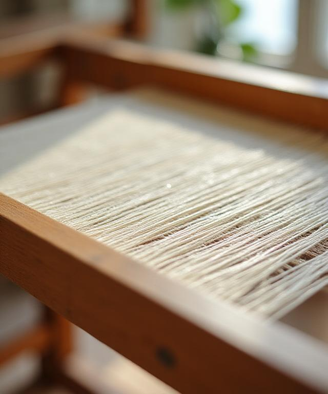

Warp, Weft, and the World We Inherit.
At LoomLore Academy, we don't just teach weaving; we champion a revolution. How can a craft so ancient lead the charge in modern sustainability? By returning to our roots while embracing scientific innovation.
We're committed to training the next generation of artisans to be as ethical as they are skilled. Our curriculum isn't just about loops and knots—it's about ecological stewardship.
Our Green Manifesto
Weaving a Greener Future
Have you ever wondered about the true cost of a single yard of fabric? We have. That's why every course at LoomLore Academy integrates low-impact methodologies from day one.
Zero-Waste Drafting
We've pioneered drafting techniques that ensure not a single inch of warp is left on the loom. Our students learn to design garments where the pattern geometry matches the loom's capabilities perfectly. It reduces off-cut waste to nearly zero. It's precise. It's elegant.
Organic Yarn Sourcing
We've curated a network of 12 local heritage farms. From organic cotton to recycled hemp blends, we show you how to vet your suppliers for transparency.
Natural Dye Lab
Explore our laboratory where we extract vibrant pigments from vegetable peels and bark. No harsh chemicals, just the beauty of nature.
Circular Fabric Life
We teach the art of mending and re-weaving. Every fabric created here is designed to be composted or recycled.
The Science of Softness
Sustainable doesn't mean scratchy. We're proving that ethical fibers often provide superior hand-feel and longevity compared to mass-produced synthetics. Join us in the lab to test tinsel strengths and absorption rates yourself.
Voices of Change
"The natural dye course completely shifted my perspective on color. I don't think I can ever go back to synthetic pigments again. My skin feels better, and so does my soul."
- Yua A.
Why did we choose LoomLore Academy for our brand's staff training? Because they actually understand the logistics of a closed-loop system. Most teach the theory; these folks teach the practical execution of a zero-waste studio. Life-changing stuff for our production team in Brooklyn.
Muelas Accashian
Creative Director, Urban Weave
"Unbelievable depth. We spent three hours just discussing the ethics of different water-filtration systems for wash-cycles. They don't cut corners!"
- Dazmin H.